Other recruitment tags
← regions and settlements · wiki index
Region markers that recruitment checks but that are neither a recruitment zone nor a homeland. A unit requirement "not in a Ptolemaic region" means the unit cannot be raised in the regions listed under that marker here, whoever holds them.
| Zone | Units | Regions | Zone | Units | Regions | Zone | Units | Regions | Zone | Units | Regions |
|---|---|---|---|---|---|---|---|---|---|---|---|
| Ptolemaic | 3 | — | Legio iiii parthica early | 2 | 89 | Legio viii gallica early | 2 | 24 | Legio xiii gemina early | 2 | 17 |
| Legio i early | 2 | 3 | Legio ix early | 2 | 23 | Legio x equestris early | 2 | 56 | Legio xiiii early | 2 | 27 |
| Legio i senatoria early | 2 | 3 | Legio v alaudae early | 2 | 55 | Legio x fretensis early | 2 | 4 | Legio xv apollinaris early | 2 | 26 |
| Legio iii cyrenaica early | 2 | 77 | Legio v early | 2 | 3 | Legio xi early | 2 | 24 | Legio xv early | 2 | 7 |
| Legio iii gallica early | 2 | 29 | Legio vi ferrata early | 2 | 150 | Legio xii antiqua paterna fulminata early | 2 | 87 | Seleucid | — | — |
| Legio iiii macedonica early | 2 | 42 | Legio vii paterna macedonica early | 2 | 65 |
Legio iii gallica early
29 regions · 2 units
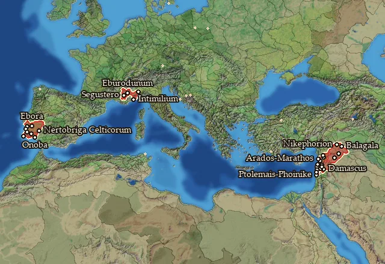
Regions in this zone (29)
Ake · Arka · Arwad-Marat · Beruta · Caturigia-Bodionticia · Celticia · Celticia Maritima · Celticia Meridionalis · Celticia Occidentalis · Celticia Orientalis · Conia · Conia Maritima · Damashq · Emesene · Gebal · Intimilia-Epanteria · Kauchabenia · Khamat · Massyas · Massyas Pedion · Nikephoreia · Onuba · Palmyrene · Rhambaia · Statiellia-Vagiennia · Vocontia · Zabadaia · Zidun · Zur
Legio iiii macedonica early
42 regions · 2 units
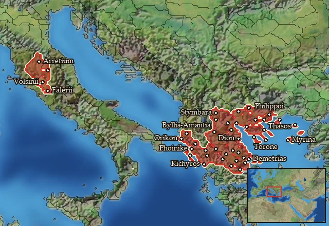
Regions in this zone (42)
Achaia Phthiotis · Akrokeraunia · Akte · Amphaxitis · Ano Chaonia · Athamania · Bisaltia-Krestonia · Bottiaia · Byllionia-Amantia · Chalkidike · Chaonia · Datos · Deuriopos-Pelagonia · Dolopia-Oitaia · Edonis · Emathia · Etruria · Etruria Orientalis · Faliscia · Hellas · Histiaiotis · Kerkyra · Lemnos · Lynkestis-Eordaia · Magnesia · Malis-Ainis · Molossia · Mygdonia · Notia Bottiaia · Orestis-Elimeia · Pelasgiotis · Perrhaibia · Pieria · Samothrake · Sintike-Odomantike · Sithonia · Thasos · Thesprotia · Thessalia · Thessaliotis · Tymphaia · Velzna
Legio iiii parthica early
89 regions · 2 units
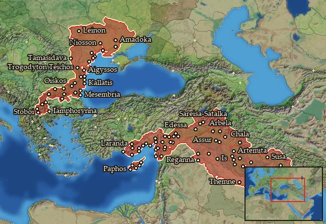
Regions in this zone (89)
Agriania · Aigyssia · Aipeia · Aisitaia · Amathousia · Anatolike Chalybonitis · Anatolike Isauria · Anatolike Tracheiotis · Ankobaritis · Anthemousia · Apamene · Apolloniatis-Mesopotamia · Arbelitis · Arpia · Arrhapachitis · Artakene · Artakia · Assyria · Babylonia · Bambyke · Belos · Boreia Sittakene · Boreia Tracheiotis · Borysthenes · Carpiania · Chaldaia · Chalonitis · Charakene · Denthelentike · Dolicheia · Dytike Apolloniatis · Elymais · Erigonia · Getaia · Gordyene · Halmyris · Hellenike Tyragetia · Hesperos Georgike Skythia · Hesperos Getaia · Hesperos Tracheiotis · Hesperos Triballia · Hylaia · Ikaros · Issikos Kolpos · Kallatia · Kallippidia-Alazonia · Khalab · Kharranu · Kilikia · Kitiy · Krobyzia · Kyrrhestike · Leuke Akte · Maidia · Mallotis · Martenia-Orchenia · Mesambria · Mese Kilikia · Mesopotamia · Mygdonia-Syria · Ninawa · Nippour · Notia Charakene · Notia Gordyene · Notia Tracheiotis · Odessia · Basilike Brenaia · Olbiana · Orchoe · Osrhoene · Paionia · Paphia · Paralia Chaldaia · Pieria-Syria · Pyramos · Salamina · Sittakene · Skaia · Sousiane · Syria · Tingene · Tomea · Tracheiotis · Triballia · Trogodytaia · Tyle · Tyragetia · Tyrasia · Zeugma-Euphrates
Legio ix early
23 regions · 2 units
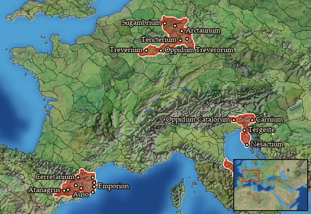
Regions in this zone (23)
Ager Gallicus · Ankon Petra · Ausetania · Bergistania · Carnia · Catalia · Cerretania · Cugernia Vetus · Emporitia · Histria · Histria Septentrionalis · Ilergetia Orientalis · Indicetia · Lacetania · Picenum · Rhodetia · Sordonia · Sugambria · Tencteria Vetus · Treveria · Treveria Orientalis · Ubia Vetus · Usipetia Vetus
Legio v early
3 regions · 2 units
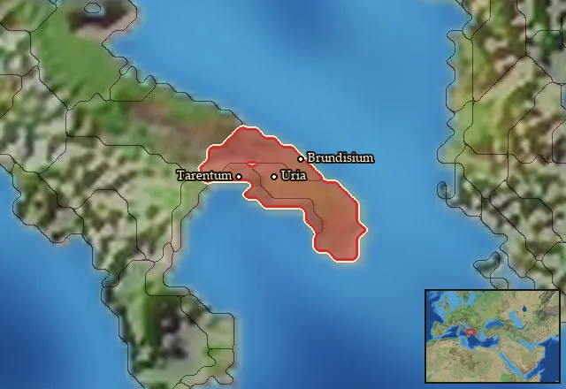
Regions in this zone (3)
Calabria · Salentinia · Taras
Legio vi ferrata early
150 regions · 2 units
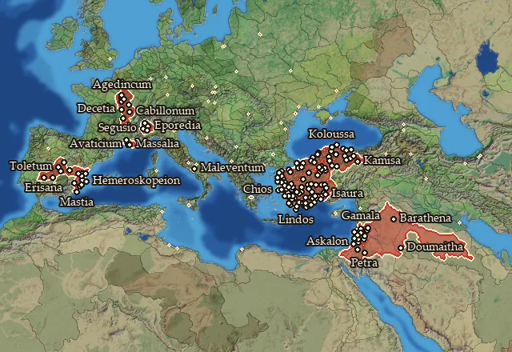
Regions in this zone (150)
Abilene · Adramyttenos Kolpos · Aeduia · Aeduia Occidentalis · Agraia-Agoubenia · Aizanitis · Amastris · Anatolike Phrygia · Anatolike Tolistobogia · Ano Troias · Arinna · Arktonnesos · Ashdud · Ashqalon · Auranitis · Avaticia · Bithynia · Boreia Palaistine · Boreia Paphlagonia · Brannovicia · Carpetania · Carpetania Meridionalis · Carpetania Septentrionalis · Chalkedonia · Charonia · Chios · Chrysorrhoas · Contestania · Contestania Meridionalis · Contestania Occidentalis · Contestania Orientalis · Dorian Chersonesos · Dorylaia · Edetania · Edetania Meridionalis · Edetania Occidentalis · Estwediys · Etennia-Kotennia · Euantheia · Eurymedoneia · Gadaris · Gadilonitis · Gaulanitis · Gazaia · Halikarnassia · Hellenike Mariandynia · Hesperos Arabia · Hesperos Pamphylia · Hesperos Pisidia · Hieratikos Pontos · Homonadia-Oroandia · Hypios · Idoumaia · Idrias · Ionia · Ioudaia · Isauria · Kaikia · Kalbia · Kamisene · Kappadoxia · Karia · Katakekaumene Lykaonia · Kaukonia · Kaystros · Kianos Kolpos · Kibyratis · Kimiatene · Klazomenia · Korbeous · Kos · Latmikos Kolpos · Lelegia · Lesbos · Lydia · Lykaonia · Lykia · Madabitis · Maiandros · Mandubia-Blannovia · Marsyas · Massalike Kontestania · Mastienia · Megale Phrygia · Methymnia · Milyas · Mimas · Mlaundos · Mykale · Myros · Mysia · Nea Ionia · Nea Tektosagia · Notia Bithynia · Notios Rhodos · Olcadia · Orgasia · Pamphylia · Paphlagonia · Paralia · Paralia Paphlagonia · Paroreia Phrygia · Paroreia Pisidia · Pelopeia · Peraia · Pessinountis · Petnelissos · Phanaroia · Phaselia · Phrykonis · Pimolisene · Pisidia · Pityoussa · Pontos · Propontis · Rabat Xaman · Raqemo · Rhaabenia-Masania · Rhodos · Saguntia · Salassia · Salassia Meridionalis · Salluvia · Salone · Samnium · Samos · Saramene · Segobrigia · Segusiavia-Ambivaretia · Segusinia · Senonia · Senonia Orientalis · Senonia Septentrionalis · Shamerayin · Sinopeia · Sipylos · Synnadia · Taurinia · Tektosagia · Telmessis · Themiskyra Pedion · Tlawa · Tolistobogia · Trachonitis · Troias · Trokmia · Tsenmure · Turdulia · Turdulia Orientalis · Zelitis
Legio x equestris early
56 regions · 2 units
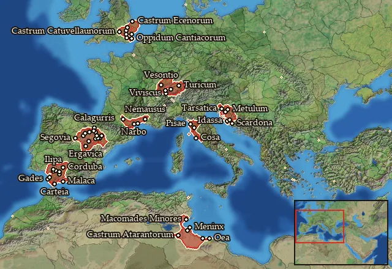
Regions in this zone (56)
Aestuarium Baeticum · Agadir · Arecomicia · Arevacia · Arevacia Centralis · Arevacia Meridionalis · Arevacia Occidentalis · Arevacia Septentrionalis · Atarantia-Gindania · Bellia · Bellia Orientalis · Bellia Septentrionalis · Bracheion · Calpe · Cantiacia · Cantiacia Orientalis · Catuvellaunia · Catuvellaunia Occidentalis · Catuvellaunia Orientalis · Ecenia · Elisycia · Epichos · Ergavicia · Etruria Meridionalis · Etruria Occidentalis · Etruria Septentrionalis · Hasta · Hellenike Arekomikia · Iapodia · Liburnia · Liburnia Orientalis · Liburnia Septentrionalis · Lusonia · Lusonia Iberica · Malaka · Maqoma Zaxyir · Nantuatia · Pelendonia · Sedetania · Seniensia · Sequania · Sequania Meridionalis · Sequania Orientalis · Sinus Liburnicus · Tectosagia · Tittia · Trinobantia · Trinobantia Orientalis · Turdetania Centralis · Turdetania Meridionalis · Turdetania Occidentalis · Turdetania Orientalis · Turdetania Septentrionalis · Veragria · Woyxat · Zabrutuxun
Legio x fretensis early
4 regions · 2 units
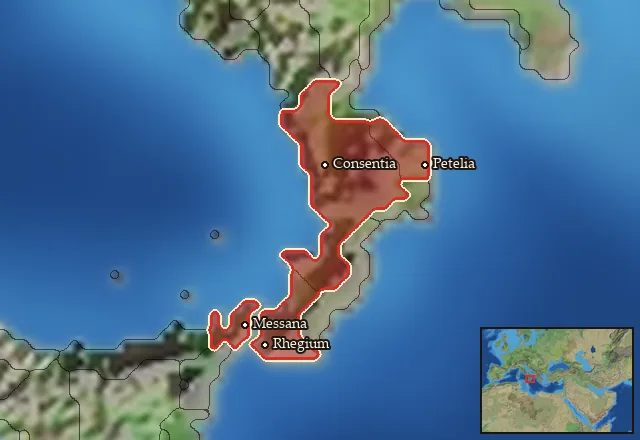
Legio xv apollinaris early
26 regions · 2 units
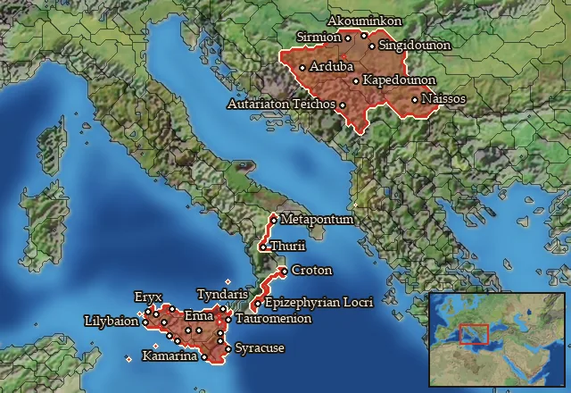
Regions in this zone (26)
Akragas · Amantinia · Anatolike Sikelia · Arik · Autariataia · Boreia Skordiskia · Daesitiatia · Dytike Sikania · Elymia · Epikrateia · Hesperos Skordiskia · Hipparia · Katania · Kroton · Lokroi Epizephyrioi · Metapontion · Naissitania · Notia Sikania · Sikania · Sikelia · Skordiskia · Thourioi · Trinakria · Tyndaritis · Xouthia · Ziz
Legio xv early
7 regions · 2 units
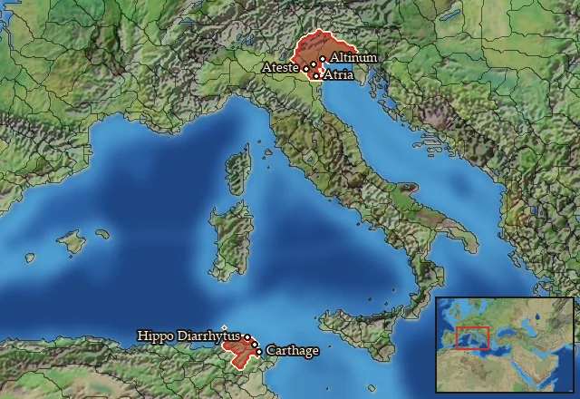
Regions in this zone (7)
Qart-Khadasht · Septem Maria · Venetia · Venetia Occidentalis · Venetia Orientalis · Xatiq · Xupon Zaxyir
Legio i early
3 regions · 2 units
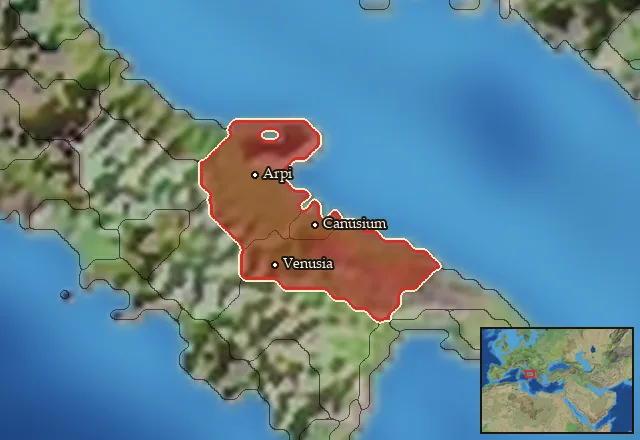
Legio i senatoria early
3 regions · 2 units
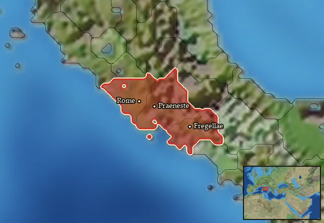
Regions in this zone (3)
Latium · Latium Novum · Roma
Legio iii cyrenaica early
77 regions · 2 units
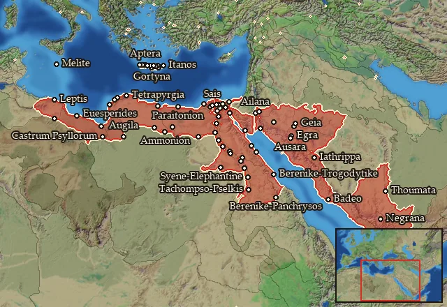
Regions in this zone (77)
Aidaia · Ailanitos Kolpos · Ammonia · Apollonopolites-Latopolites Nomoi · Apteraia · Arabike Aigyptos · Arsinoites-Aphroditopolites Nomoi · Athribites-Leontopolites Nomoi · Banizomeneia · Barke · Boreia Libya · Boreia Minaia · Boreia Trogodytike · Boubastites-Arabia Nomoi · Deutera Oasis · Dodekaschoinos · Elisaria · Erythra Thalassa · Euesperidai · Gortynia · Gynaikopolites Nomos · Hermopolites-Kynopolites Nomoi · Heroon Kolpos · Heroopolites-Heliopolites Nomoi · Hesperos Aigyptos · Hesperos Kyrenaike · Hierapytnia · Ida · Itania · Kassanitis · Katabathmos · Koptites-Tentyrites Nomoi · Kydoniatis · Kyrenaike · Latia · Lechienia · Lepqi Adir · Lykopolites-Hypselites Nomoi · Lyttos · Macaea · Maleth · Manahiytim · Marmarike · Memphites-Letopolites Nomoi · Mendesios-Diospolites Kato Nomoi · Menelaites-Prosopites Nomoi · Minoa · Nagran · Nalhan · Nasamonia · Nashaq · Notia Lechienia · Notia Sarakenia · Ombites Nomos · Oxyrhynchites-Herakleopolites Nomoi · Panopolites-Antaiopolites Nomoi · Pelousiake · Peri Thebas-Pathyrites Nomos · Pharanitaia · Polyrhen · Prote Oasis · Psyllia · Qarnawu · Rithymna · Sabaia · Saites-Xoites Nomoi · Sarakenia · Sebennytes-Bousirites Nomoi · Skenitaia · Swirwakh · Syrtis · Tanites-Sethroites Nomoi · Taucheira · Thamoudaia · Thinites-Diospolites Mikros Nomoi · Yathil · Yathrib
Legio v alaudae early
55 regions · 2 units
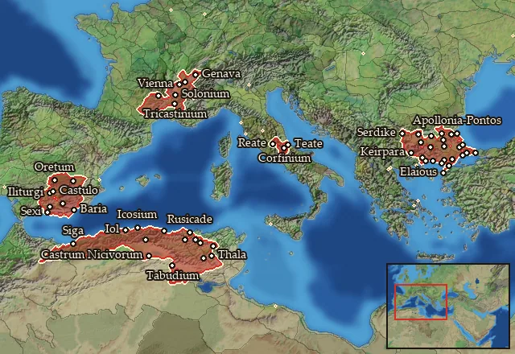
Regions in this zone (55)
Allobrogia · Ambarria · Antheia · Astia · Ay-Khol · Bastetania · Bastetania Maritima · Bastetania Occidentalis · Bastetania Septentrionalis · Bessike · Bosporos · Brenaia · Briantike-Korpilike · Cavaria · Diotike · Elaiousa · Eumolpia · Gabalia-Rutenia · Hebros · Hellenike Bistonia · Ikosim · Kabylia · Kainia · Kardia · Kirthan · Koilaletia · Korelia · Kyrmianaia-Nipsaia · Lemannus Inferior · Marrucinia-Vestinia · Masaesylia Septentrionalis · Massylia Meridionalis · Massylia Occidentalis · Massylia Septentrionalis · Musulamia · Nicivia-Suburburia · Oretania · Oretania Meridionalis · Oretania Orientalis · Paelignia-Marsica · Poltymbria · Pyrogeria · Rushikade · Sabinia-Aequia · Salda · Sapaia-Bistonia · Shigan · Thipaxatan · Thraikie Propontis · Thynia · Tranipsia-Melanditaia · Treria-Tilataia · Tricastinia-Helvia · Ubusia · Zekzi
Legio vii paterna macedonica early
65 regions · 2 units
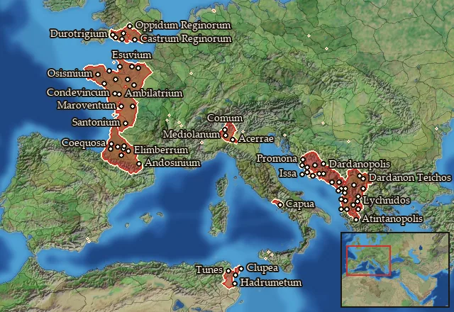
Regions in this zone (65)
Adrumet · Ambilatria-Andecavia · Anagnutia · Anatolike Dardania · Andosinia-Aerenosia · Ardiaia · Aspis · Atintania · Auscia-Gatia · Axios · Basilike Dassaretia · Bigerrionia-Bargusia · Boreia Labeataia · Campania · Cenomania-Eburovicia · Cocosatia-Vocatia · Coriosolitia · Daorsia · Dardania · Dassaretia · Delmatia · Diablintia · Ditionia · Durotrigia · Durotrigia Centralis · Durotrigia Occidentalis · Durotrigia Orientalis · Elusatia · Epetia-Salonitis · Epidamnia · Esuvia · Galabria · Gylakeia · Illyria · Insubria · Insubria Meridionalis · Issa · Kaouia · Labeataia · Lexovia · Liburnonesoi · Mania · Melaina Korkyra · Namnetia · Narensia · Olkinia · Orestike Dassaretia · Orobia · Osismia · Parthinia · Penestia · Pictonia · Qart-Khadasht Zaxyir · Redonia · Reginia · Reginia Septentrionalis · Santonia · Sotiatia · Tarbellia-Ptiania · Tarusatia-Sibusatia · Taulantia · Tragouria · Tunesia · Venellia · Venetia-Aremorica
Legio viii gallica early
24 regions · 2 units
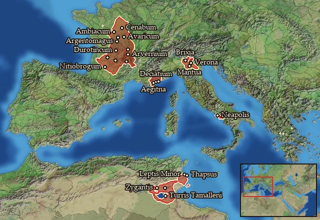
Regions in this zone (24)
Arvernia · Arvernia Septentrionalis · Athesia · Biturigia · Biturigia Meridionalis · Biturigia Occidentalis · Cadurcia · Carnutia · Cenomania · Cenomania Meridionalis · Deciatia · Hellenike Dekiataia · Lemovicia · Lepqi Zaxyirt · Machlya · Maxya-Ausea · Nitiobrogia · Oxybia · Parthenope · Petrocoria · Thapsos · Turonia · Vellavia-Eleutetia · Zygantia-Zauecia
Legio xi early
24 regions · 2 units
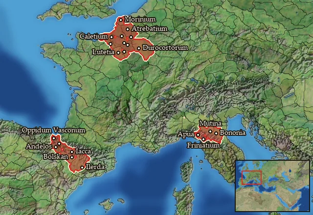
Regions in this zone (24)
Ambiana · Apuania · Atrebatia · Bellovacia · Boia · Boia Occidentalis · Caletia · Frentania · Friniatia · Hirpinia · Iacetania · Ilergetia · Meldia · Morinia · Parisia · Pentria-Carricinia · Remia · Suessetania · Suessionia · Vasconia · Vasconia Maritima · Vasconia Meridionalis · Veliocassia · Viromandua
Legio xii antiqua paterna fulminata early
87 regions · 2 units
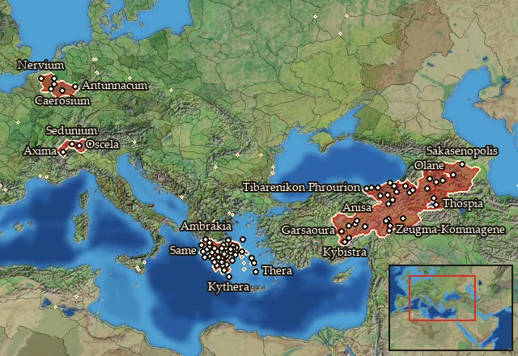
Regions in this zone (87)
Achaia · Acheloos · Aitolia · Akarnania · Akilisene · Ambrakikos Kolpos · Amphilochia · Anatolike Achaia · Anatolike Kyklades · Ano Araxes · Ano Euphrates · Argolis · Arkadia · Attike · Basoropeda · Boiotia · Boreia Lychnitis · Brasiai · Caerosia-Paemania · Ceutronia · Ceutronia-Levacia · Chaldaia-Pontos · Condrusia-Segnia · Dirphysia · Drilaia · Dytike Kyklades · Elis · Euboia · Garsaouritis · Geidumnia · Hellenike Makronia · Hellenike Mossynoikia · Hellenike Tibarenia · Hesperos Achaia · Hesperos Sophene · Histiaia · Kalliste · Kappadokia · Kappadokike Kilikia · Karanitis · Kataonia · Kato Kommagene · Kephallenia · Kommagene · Korinthia · Kythera · Lakonia · Lakonikos Kolpos · Lepontia · Leukas · Lychnitis · Makronia · Mantineia · Megale Armenia · Megaris · Melitene · Messenia · Mikra Armenia · Morimene-Chammanene · Mossynoikia · Nervia · Ocheia · Olygirtos · Opountia Lokris · Ozolia Lokris · Peiraieus · Phokis-Doris · Pisatis · Pleumoxia-Grudia · Poimandris · Pytho · Sakasene · Saraouene-Laouiniasene · Sedunia-Uberia · Sikyonia · Skyros · Skythenia · Sophene · Syspiritis · Taronitis · Tegeatis · Thebai · Tibarenia · Triphylia · Troizen · Tyanitis · Zakynthos
Legio xiii gemina early
17 regions · 2 units
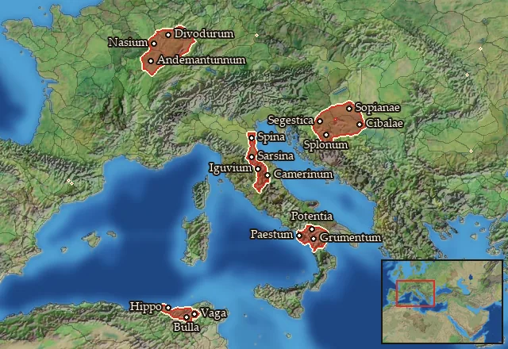
Regions in this zone (17)
Andizetia-Azalia · Bebaxal · Breucia · Camertia-Nahartia · Leucia · Lingonia · Lingonia Cisalpina · Lucania · Lucania Vetus · Maezaeia · Mediomatricia · Poseidonia · Sassinia · Savia · Umbria · Vagensia · Xupon
Legio xiiii early
27 regions · 2 units
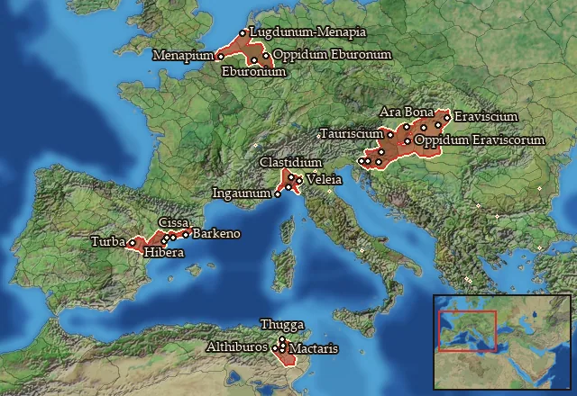
Regions in this zone (27)
Altiburosh · Cessetania · Eburonia · Eburonia Orientalis · Eraviscia · Eraviscia Occidentalis · Eraviscia Orientalis · Eraviscia Septentrionalis · Genuatia-Tigullia · Ilercavonia · Ilercavonia Septentrionalis · Ilvatia · Ingaunia · Laietania · Latobicia · Maktarxim · Maricia-Laevia · Menapia · Menapia Orientalis · Tauriscia · Tauriscia Centralis · Tauriscia Meridionalis · Tauriscia Occidentalis · Tauriscia Orientalis · Tobgaxag · Turboletia · Zama Meizon
Ptolemaic
0 regions · 3 units
No region is in this zone at the start of the campaign, so the units below are not raisable anywhere then.
Seleucid
0 regions · 0 units
Has no effect in the current version.